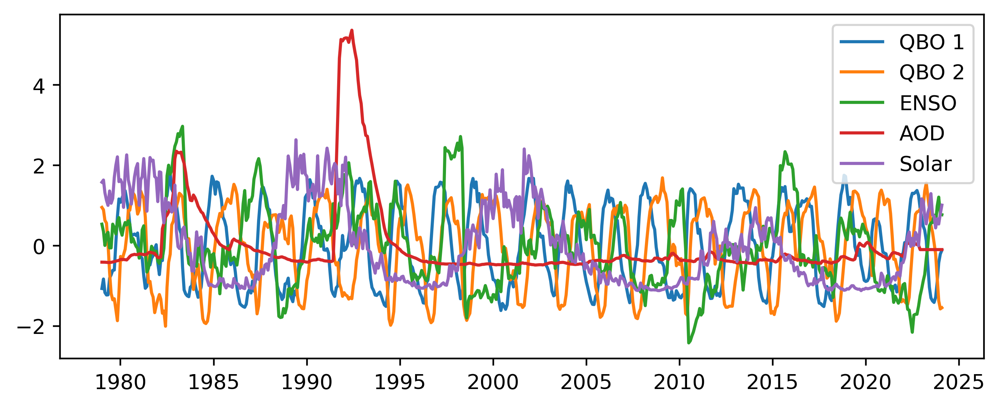
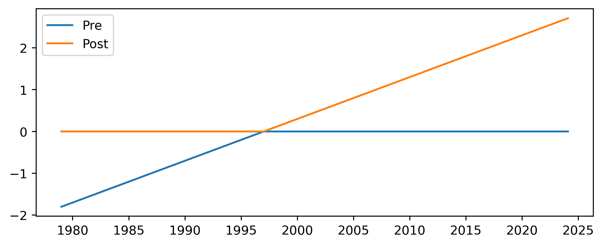
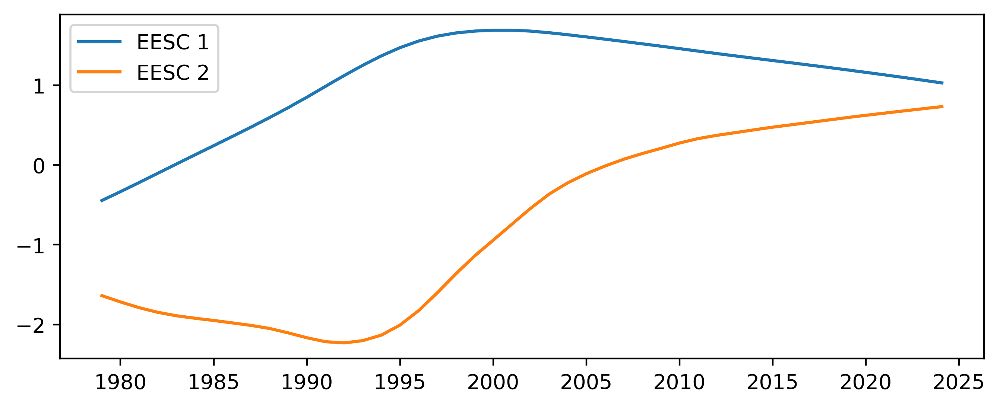

Technical Note on the Baseline Regression Implementation¶
The Regression Model¶
The general regression problem is written as,
where \(\mathbf{y}\) is the length \(n\) vector of observations, \(\beta\) is the length \(m\) vector of predictor coefficients, \(\mathbf{X}\) is the \(n\times m\) matrix of predictors, and \(\epsilon\) are the residuals. The goal of the regression is to find the values of \(\beta\) which minimize the quantity
where \(\mathbf{\Omega}\) is the covariance of the observations. The problem admits a direct solution,
which can also be used to obtain an error estimate of \(\beta\), assuming \(\mathbf{\Omega}\) is correctly specified.
The regression is performed in an iterative procedure (Cochrane and Orcutt, 1949) with \(\mathbf{\Omega}\) set to unity for the first iteration. The first iteration is equivalent to unweighted ordinary least squares. After the first iteration the autocorrelation coefficient, \(\rho\), is calculated through,
where \(\overline{\epsilon}\) is the mean value of the residuals. Typical values for the autocorrelation coefficient are \(\sim 0.2-0.3\). For the next iteration the covariance matrix is modified taking into account the autocorrelation (Prais and Winsten, 1954),
The covariance matrix is modified accordingly to account for measurement gaps (Savin and White, 1978). This procedure is repeated until the autocorrelation coefficient has converged within some tolerance level. The final error estimate is calculated by scaling \(\mathbf{\Omega}\) to match the observed variance of the residuals.
Predictors/Configurations¶
There are three standard configurations, the piecewise linear trend (PWLT), independent linear trend (ILT) and the EESC trend configuration. The regression procedure is the same for all configurations, the only difference is the predictors used in the model. Common to all of these baseline regression setups are a set of predictors intended to account for the natural variability of the measurements.
Two orthogonal components of the QBO from https://acd-ext.gsfc.nasa.gov/Data_services/met/qbo/QBO_Singapore_Uvals_GSFC.txt which are calculated using principal component analysis
Solar 10.7 cm flux from https://spdf.gsfc.nasa.gov/pub/data/omni/low_res_omni/omni2_all_years.dat
ENSO without lag from http://www.esrl.noaa.gov/psd/enso/mei/table.html
GISS AOD from https://data.giss.nasa.gov/modelforce/strataer/ which is extended passed 2012 by extrapolating the last value
For convenience all of these predictors have been scaled to have mean 0 and standard deviation 1.
 Figure 1 Standard predictors uses in all regression schemes.
Piecewise Linear Trends¶
The piecewise linear trend consists of two predictors, the first being a linear increase until January 1997 and zero afterwards, and the second zero until January 1997 and a linear increase afterwards. The two predictors are both zero in January 1997 and are thus linked together. In addition an overall constant is added which shifts the value at the inflection point.
 Figure 2 Predictors added for the piecewise linear trend scheme.
Independent Linear Trends¶
The independent linear trend is created using five predictors:
A linear increase until January 1997 and zero afterwards
Zero until January 2000, and a linear increase afterwards
Constant until January 1997 and zero afterwards
Zero until January 2000 and constant aftwards
Constant between January 1997 and January 2000 and zero elsewhere
In both the “pre” and “post” time periods there is both a linear and constant component, allowing the two trends to be treated almost independently of each other. In the gap period between the two an additional constant is added. Because of the nature of the constants added the overall fitted time series is likely to contain jumps in both 1997 and 2000 where the respective trends begin and end.
Figure 3 Predictors added for the independent linear trend scheme.
Two Orthogonal EESC Trends¶
Here the overall trend in ozone is accounted for by including two orthogonal components of the EESC. The two components are calculated using principal component analysis on the EESC for different mean ages of air.
 Figure 4 Predictors added for the EESC trend scheme.
References¶
Cochrane, D., & Orcutt, G. H. (1949). Application of least squares regression to relationships containing auto-correlated error terms. Journal of the American statistical association, 44(245), 32-61.
Prais, S. J., & Winsten, C. B. (1954). Trend estimators and serial correlation (Vol. 383, pp. 1-26). Chicago: Cowles Commission discussion paper.
Savin, N. E., & White, K. J. (1978). Testing for Autocorrelation with Missing observations. Econometrica (Pre-1986), 46(1), 59.
[ ]: